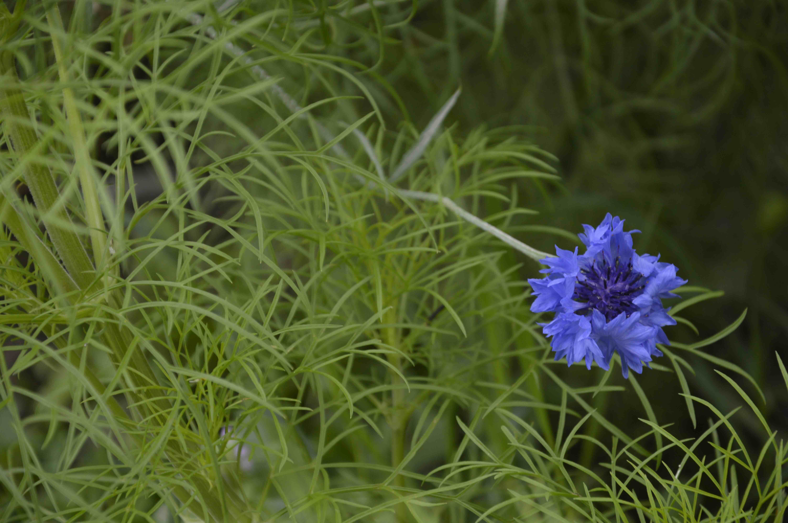

A little practice for right now
Need a little
peace today?
Tell us what today feels like. We’ll offer one small thing you can do, right where you are.
Find my little moment ↓One gentle suggestion, just for today.

Start with how you feel
What would feel
kindest right now?
There’s no wrong answer. Choose the feeling that’s closest today.
Your little moment for today
Small is more than enough.✳
Your suggestion is saved on this device. Come back tomorrow for another little moment.
For the days you need a few more ideas
A little calm,
kept close.
A thoughtful collection of 100 small activities for breathing room, fresh air, gentle movement and connection.
$4one-time download
keep it forever
keep it forever
We’re getting this little collection ready.